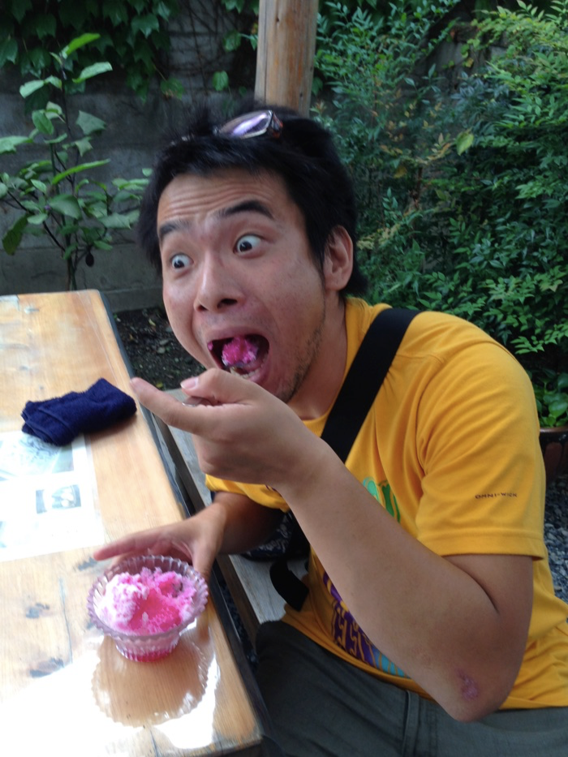
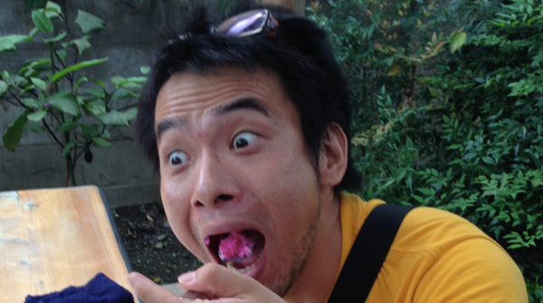

らーめんうまいっすよねー

あーほんとうにらーめんってうまいっすよねー
夏休みとは
目的 夏休みは温帯に属する国々を中心に広く実施されているが、その目的は各国によって異なる。夏季の暑熱の回避が主因となることが多いが、学事年度間（アメリカ合衆国）、夏季の伝統的な慣習の存在など、他の要因が実施の副要因となることも多い。 日本の教育機関の場合、正式名称は「夏季休業」といい、校舎などに冷房設備がない場合が多く、太平洋高気圧支配下での授業が暑熱により困難なので、その間を休業とするためとされる。そして、その期間に期待される教育効果の主たるものは、普段学校では体験することの出来ないことへの児童・生徒の挑戦とされる。 引用 - Wikipedia
・
・
・
・
やばいくらいらーめんってうまいっすよねー
挑戦をしなくては夏休みと定義されない
博多らーめんってうまいっすよねー
挑戦ゆうても世のお小遣い制のお父さんはお・か・ねがない！！！！
自転車でいってきて博多らーめん食いたいっすねー
と、あるサプギョプサルのお店で酔っ払いながらこんなことをいっていたら

(注) 実際に金5万円をもらったときの写真です
だったらお金だすから福岡まで行ってきてついでに棒ラーメン買ってきてくんない?
あ、本場の棒ラーメンね
まじで博多に飛行機でいって博多ラーメン食って自転車で東京に帰ってきてもいいから博多ラーメン食いたいっすねー
そんな馬鹿な・・・・こんな思いつきのバカバカしい企画の挑戦に「ぽん」と5万円を出してくれる変な人がいるなんて・・・・・おかしい・・・・おかしいぞ・・・この展開
調べたら1200kmもあるし、YomeAuthも通ってないけれども食いたいっすねー
あんまりにも真剣にお金くれそうだったからgooglemapで調べたらマジでこれはキツイぞ・・・・関東と違って九州から大阪までマジ山しかねーじゃん・・・・
いやいやいやいや・・酔っ払った勢いで言ったんでしょ？最初僕はそう思った。。
翌日聞いてもレスポンスは常に200コードを返していて、「なんなら前金2万円今すぐだしましょうか？」っていう高速レスポンスだった・・・・
酔った勢いで自分で言ってしまって人生で何回かやっている「しまった・・・調子に乗りすぎたー・・・」って事案だけども引くに引けないし博多ラーメンってくいたいっすよねー
.
.
.
.

.
これはマジの挑戦(もしかしたら罰ゲームに近いかもしんない)や・・・・・・
.
.
調子ぶっこんくんじゃなかったと今更泣きそうだけども博多らーめんってうまいっすよねー
（注）実際の内容とは若干違うところもありますが、大体のところはノンフィクションです
README.mdに続く